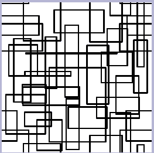

[N-World Contents] [Book Contents] [Prev] [Next] [Index]
Creating a Seamless Texture Map
In this chapter you'll learn how to create a texture map that wraps around an object with no visible seams.
In This Chapter
In this chapter, you'll learn a handy technique for creating a seamless texture map. Seamless texture maps are handy whenever you're applying textures to an object and don't want to necessarily use a product like N-Paint 3D to line up your textures at a mapper's seam.
The Problem
When a texture map wraps all the way around an object, it meets the edge of the mapper, and can create a "seam." For example, applying the texture map shown in Figure 6.1 to a sphere can result in problems like those shown in Figure 6.2:
Figure 6.1 A texture map
Figure 6.2 Sphere with texture map seam
By creating a seamless texture map, textures "line-up" wherever they happen to meet along the seam of a mapper. In the following examples, we'll create a seamless texture map and apply it to a simple geometric object, so you can easily see the effect. However, the principles we'll introduce apply to any texture mapping situation.
Create a Seamless Texture Map
Let's start by creating a new, blank canvas:
1. (CLICK-L) on File>Create New.
- The Create New image dialog box appears:
Figure 6.3 Creating a new image
2. (CLICK-L) in the Width field.
- A numeric keypad appears. Use the keypad to set the canvas width to 512.
3. (CLICK-L) on the Height field, and set the height of the new image to 512.
4. (CLICK-L) on Do it.
- The new canvas appears in the Paint canvas window.
Painting Your Map
Let's create the texture map:
5. (CLICK-L) on the Quad Tool icon in the Tool Box menu
Figure 6.4 The Quad Tool Icon
- The Quad Tool parameters menu appears to the right of the tool box.
Figure 6.5 The Quad Tool Menu
6. (CLICK-L) on Outline.
- When Outline is on, two new parameter fields, Width and Soft, appear underneath the Outline toggle.
7. Edit the Width and Soft fields to match those shown in Figure 6.5.
8. (CLICK-L) on color, and select white.
9. Use the quad tool to draw several intersecting polygons in the center of your canvas, like this:
- Your canvas should look something like Figure 6.6 when you're finished.
Figure 6.6 The finished canvas
- DO NOT draw rectangles which intersect the edge of the canvas, like the ones in Figure 6.7
Figure 6.7 DON'T draw off the edge of the canvas
Shifting the Image
The next step in creating the seamless texture map is to "shift" the image on the canvas.
10. (CLICK-L) on Ink>Shift
- The Shift ink parameters menu appears:
Figure 6.8 Shift t ink parameters
- The Shift ink will moves the image horizontally and vertically based on the offsets you specify. The part of the image "pushed off" the edge "wraps around" to the other side.
11. (CLICK-L) on the X field, and enter a value equal to half the width of your map.
- In this case, because our map is 512 x 512 pixels, enter a value of 256. Repeat the procedure for the Y field.
- (The offset of 256 pixels is arbitrary. You can offset it any amount and achieve the same result.)
12. Make sure that Outline is turned off in Quad tool parameters menu.
- If necessary, (CLICK-L) on the outline toggle switch.
13. (CLICK-L) on Do Full Canvas to shift the image.
- After you've shifted it, your canvas should resemble the one in Figure 6.9.
Figure 6.9 The shifted canvas
14. Using the Quad Tool, fill in the gaps in your image.
- Figure 6.10 shows what your image should look like after you've filled in the gaps revealed by the shift operation.

Figure 6.10 Filling in the gaps in your image
- You may want to shift the image one last time, (say, by a different number of pixels) to check for remaining gaps. In fact, you can shift the image as many times as you like in order to ensure that there are no gaps left in the image-as long as you don't draw over the edge of the image, your map will be seamless.
15. Save your image.
- Give it an easy to recognize name, like this:
seamless.rgb
Apply the Texture to an Object
Now, you need to create an object in N-Geometry that will use the texture. (This procedure is described in more detail in the N-Geometry Tutorial.)
16. (CLICK-L) on New Object>Sphere in the GeoMenus.
17. (CLICK-L) on New Object>Mapper in the GeoMenus.
- Make the mapper a spherical mapper, and select the new sphere as the bounds source for the mapper.
18. Open the Browser.
- The browser shows all objects with their assigned mappers, materials, and other attributes.
- Each object appears in the browser as a node. If Icons is selected, then objects like lights and materials are represented by icons. Otherwise, objects are listed by name:
Figure 6.11 The Nichimen Browser
Attach the Mapper to the Sphere
19. (CLICK-R) with the cursor over the Sphere node in the Browser.
- A menu of operations appropriate to the Sphere appears:
Figure 6.12 Operations for the Sphere object
20. (CLICK-L) on Assign Mapper.
- A pop-up menu of mappers currently loaded into N-World appears, similar to this one:
Figure 6.13 Available mappers pop-up menu
21. (CLICK-L) on the mapper you created in step 17.
- The mapper is now associated with the sphere.
Create a Material
For this example, we'll create a simple material using the texture map that we just created. Then we'll apply that material to our sphere.
22. Open the Attributes Editor
23. (CLICK-L) on Materials.
24. (CLICK-L) on New.
25. (CLICK-L) on Texture in the Material Parameters section of the menu.
26. (CLICK-L) on Map.
- Use the Choose File dialog box to select the following file:
seamless.rgb
27. (CLICK-L) on Save to save the material.
- Give it a name like seamless.
Apply the New Material to the Object
28. In the Browser, (CLICK-R) on the Sphere object.
- The operations menu appears.
29. (CLICK-L) on Assign Material.
- A menu appears listing all materials currently loaded into memory.
Figure 6.14 Choose Material menu
30. (CLICK-L) on the material you created in steps 23 through 27.
- The Assign Mappers dialog box appears:
Figure 6.15 The Assign Mappers dialog
- An icon for your texture map appears in this dialog above a field which specifies the mapper for that texture. This field should show the name of the mapper you assigned to the sphere in step 20. If it does not, (CLICK-L) on the field and select the appropriate mapper from the pop-up menu which appears.
31. When you've assigned you mapper, (CLICK-L) on Done.
- The appearance of the sphere node in the browser changes to reflect the new material attached to it.
32. (CLICK-L) on Redisplay in the Attributes Editor.
- Your new, textured sphere should appear in the Geometry window:
Figure 6.16 The sphere with a seamless texture map
Congratulations!
You've now created a seamless texture map and applied it to an object. While we used a simple sphere in this example, the concept applies to any object where you have a texture seam. Note also that you can use N-Paint 3D as a way to paint out texture seams, as described later in this tutorial.
[N-World Contents] [Book Contents] [Prev] [Next] [Index]
 Another fine product from Nichimen documentation!
Another fine product from Nichimen documentation!
Copyright © 1996, Nichimen Graphics Corporation. All rights
reserved.